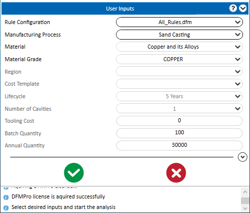
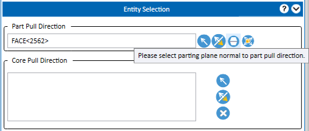
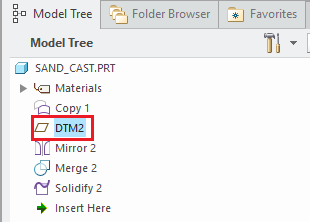
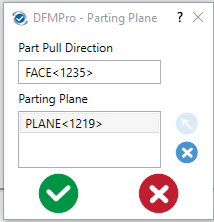

砂型鋳造に必要なすべての 入力 を追加した後、 Analyze ボタンをクリックして、DFMPro の実行を進めます。
Analyze ボタンをクリックして、DFMPro の実行を進めます。
表示されるエンティティ選択グループボックスで、抜き方向を定義します。
 Please select parting plane normal to part pull direction ボタンをクリックします。
Please select parting plane normal to part pull direction ボタンをクリックします。
DFMPro - パーティングプレーン ダイアログボックスが表示されます。
砂型鋳造の製造プロセスでは、ユーザーは抜き方向を指定し、パーティングプレーンまたはパーティングラインを選択する必要があります。

砂型鋳造に必要なすべての 入力 を追加した後、 Analyze ボタンをクリックして、DFMPro の実行を進めます。
表示されるエンティティ選択グループボックスで、抜き方向を定義します。
Please select parting plane normal to part pull direction ボタンをクリックします。
DFMPro - パーティングプレーン ダイアログボックスが表示されます。

ダイアログボックス内で、 Select Entity ボタンをクリックし、グラフィックスツリーから必要なパーティングプレーン／面を選択します。
Select Entity ボタンをクリックし、グラフィックスツリーから必要なパーティングプレーン／面を選択します。


部品の抜き方向および選択したパーティングプレーンに基づいて、DFMPro は部品の面をコープ（上型）、ドラッグ（下型）、およびその他（アンダーカット）に分類します。